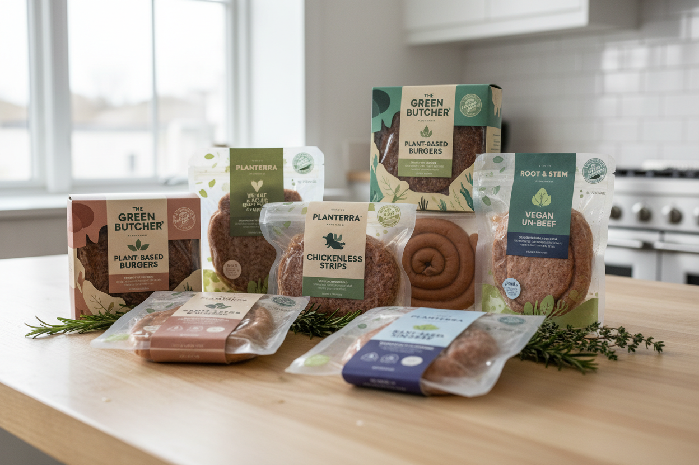

우리의 실천
등록일:
작성자: ESG환경경영팀
풀무원은 지구환경 오염을 방지하고 생태계의 복원력을 높이기 위해 전 제품에 친환경 패키지 기술 개발을 적용하고 있습니다. 이번에 도입된 생분해성 친환경 패키지는 자연 유래 원료를 활용하여 기존 석유계 화학 합성 플라스틱에 비해 온실가스 배출을 대폭 절감시키는 우수한 친환경성을 지니고 있습니다.

특히 풀무원 지구식단 제품 라인업에 전면 도입된 바이오 페트(Bio-PET) 소재는 유기 재료의 비율을 극대화하여 폐기 단계에서 빠른 자가 생분해가 이루어지도록 돕습니다. 이는 당사 중장기 Net Zero 달성 목표인 ‘2050 온실가스 제로’를 실천하기 위한 핵심 전략 중 하나이며, 다양한 협력사들과의 환경적 연대 및 파트너십을 통해 더 큰 성과를 만들어내고자 합니다.
주요 지속가능 성과지표 (Eco-Caring KPIs)
- 수자원 및 해양 플라스틱 오염 방지를 위한 용기 전면 교체
- 탄소 배출량 연간 약 150톤 가량의 직간접적 감축 효과 기대
- 지속가능 원재료 소싱 비중을 2026년까지 전체 제품의 45%로 확대
풀무원은 앞으로도 먹거리의 안전성을 최고로 유지하면서도, 그 먹거리를 담아내는 기술적 그릇에서도 지구와의 조화를 포기하지 않을 것입니다. 우리의 이러한 작은 노력이 모든 생명체와의 공존(Nature Positive)을 실현하는 가장 바른 대답이 될 것이라 확신합니다.